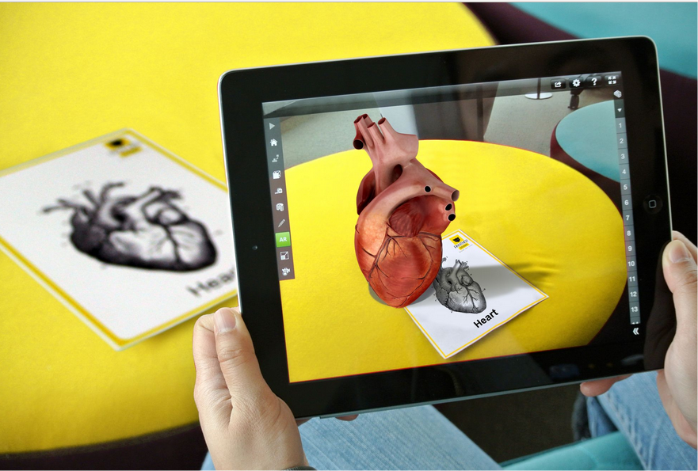
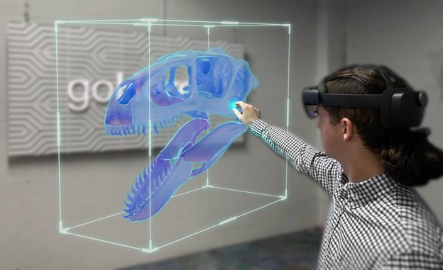
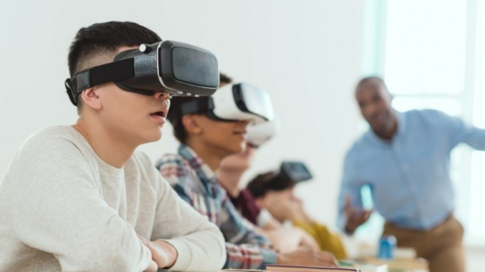
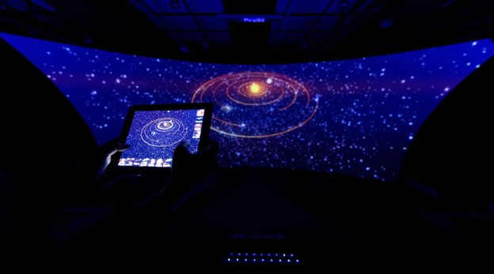
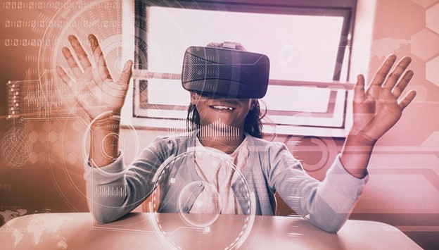

The era of monotonous lectures and worn-out textbooks has passed. With the dawn of Immersive Education, students now have the chance to take exciting excursions to investigate microscopic cells, travel to distant galaxies, and even walk in the footsteps of renowned historical figures. It's like donning the roles of both a time traveler and a scientist simultaneously!
Yes, it's a fact! Immersive Education transforms learning into a remarkable voyage that lasts a lifetime. No longer will students find themselves lost in thoughts during tedious lectures or grappling with elusive concepts from antiquated textbooks.
Instead, they become the champions of their educational journeys, venturing into uncharted territories of wisdom with every stride they make.
But don't mistake immersive education for mere entertainment, instead, it serves as a tool for reshaping education to equip students for the demands of the future.
Engaging in immersive learning helps students hone their critical thinking capabilities, problem-solving skills, and adaptability – attributes vital for thriving in our rapidly changing, modern world.
In this blog, we will set out on an expedition to discover the enchantment and marvels of Immersive Education, delving into how it alters the terrain of learning. So, let the exploration commence!
Understanding the Concept of Immersive Education
Immersive Learning is a cutting-edge approach that utilizes immersive technologies, enabling learners to engage with realistic and interactive educational landscapes.
Unlike conventional classroom techniques, immersive learning plunges students into dynamic, multi-sensory scenarios, amplifying their comprehension and retention of academic material.
Here are the foundational elements of Immersive Learning:
Virtual Reality (VR): Through VR technology, students are brought into computer-generated environments that mirror real-world situations or past occurrences. By using VR headsets, learners can navigate and engage with these virtual realms, delivering a hands-on and effective educational adventure.
Augmented Reality (AR): AR adds digital data to actual surroundings, supplementing the physical environment with extra details or interactive features. Within an academic setting, AR can amplify instructional materials, such as textbooks or physical artifacts, making education more captivating and interactive.
Mixed Reality (MR): MR fuses aspects of both VR and AR, permitting learners to engage with digital subjects within the real world and vice versa. This unbroken blend of virtual and tangible components empowers teachers to design lively and interactive learning experiences.
Merits of Immersive Learning Environments
The potential advantages of Immersive Educational Environments are vast. By weaving immersive technologies in higher education frameworks, teachers can cultivate groundbreaking learning experiences that resonate with modern-day learners, stimulating ingenuity, analytical thinking, and a perpetual passion for knowledge.
Increased Learner Involvement: Immersive learning captures students' imagination and inquisitiveness, making the educational process pleasurable and indelible. The involving character of this method encourages active involvement, enhancing engagement and eagerness to learn.
Hands-On Education: Immersive learning spaces grant students hands-on learning chances that are otherwise intricate or unattainable. Through recreating actual-life contexts, learners can acquire hands-on skills, analytical thinking capacities, and an enriched grasp of multifaceted subjects.
Customized Educational Trajectories: The use of XR technologies within immersive learning enables teachers to adapt educational experiences to the unique needs of each student. By employing adjustable content and interactive features, learners can progress at a comfortable pace, ensuring a more bespoke and efficacious educational journey.
Comprehensive Sensory Learning: Immersive learning engages various senses like vision, hearing, and touch, intensifying memory retention and understanding. This comprehensive sensory method can meet diverse learning preferences and boost information preservation.
Protected Learning Environments: Immersive Learning furnishes a secure arena for students to try out and learn from errors without the worry of real-life repercussions. This creates a hazard-free space where learners can grow self-assurance and investigate a multitude of possibilities.
 Get the App from Meta Store: Download Now
Get the App from Meta Store: Download Now
Role of Extended Reality (XR) Technologies in Immersive Education
Extended Reality (XR) is at the forefront of transforming educational experiences, providing an interactive and engaging framework for learners. This technology umbrella encompasses Virtual Reality (VR), Augmented Reality (AR), and Mixed Reality (MR), all of which have unique applications in educational settings:
Virtual Reality (VR): Through VR, students can embark on journeys to faraway locations, explore different eras of history, or delve into miniature universes, offering a rich, educational adventure. From exploring celestial bodies to ancient societies, VR makes learning tangible and alive.
Augmented Reality (AR): AR enhances real-world settings with digital information, making educational content more visually stimulating and interactive. It can include 3D models, interactive elements, and supplemental details to deepen understanding of intricate subjects.
Mixed Reality (MR): By fusing real and virtual environments, MR lets learners engage with digital materials while staying connected to their physical surroundings. This hybrid experience fosters collaboration and critical thinking in learning.
Immersive Learning Solutions
The introduction of immersive learning solutions is radically altering education by leveraging technological innovations to design gripping and interactive educational encounters. Through VR, AR, and MR technologies, students are able to connect with learning materials in a way that is both enjoyable and effective.
Here's a look at the main immersive learning solutions and their transformative effect on education:
"Explore a whole new way of learning! Try Extended Reality (XR) for yourself and open up endless learning opportunities today."
Virtual Reality (VR) in Learning Environments
 in Learning Environments") Source: LSU Online
Source: LSU Online
Virtual Reality (VR) has become a vital instrument in education, unlocking fresh opportunities for students and teachers. By enabling learners to visit virtual landscapes, experience real-world situations, and engage in hands-on learning, VR is redefining how we educate, setting the stage for empowering educational paths.
From school classrooms to university lecture halls, the potential for VR to change learning is limitless, hinting at the endless prospects of this immersive technology in the field of education.
Benefits of Using VR in Educational Spaces
Dynamic Visual Representations: VR brings to life complex ideas that may be hard to depict with traditional teaching techniques. It enables students to interact with three-dimensional models, explore molecular forms, or simulate architectural plans.
Risk-Free Exploration: In areas like engineering, VR provides a platform for students to work with virtual models, experimenting without the fear of physical harm or wastage of materials. This stimulates creativity and forward thinking.
Customized Learning Paths: VR can be tailored to individual learning preferences and progress, meeting each student's specific needs. It enables adjustments in difficulty levels, fostering personalized education.
Boosting Student Involvement: VR’s immersive features sustain students' interest and stir their inquisitiveness. This exploration of new realms encourages proactive participation and keeps motivation levels high.
Bridging Geographical Gaps: VR allows students from different locations to learn together, breaking down physical barriers. This global linkage promotes diversity in learning experiences.
Real-World Simulations: VR lets students delve into realistic scenarios in a controlled setting. Whether visiting historical landmarks, investigating ecosystems, or taking part in scientific inquiries, the possibilities are vast.
Enhanced Understanding: Visual engagements through VR can amplify understanding and retention, particularly in complex subjects such as science and geography.
Empathy and Perspective Building: VR can aid in developing empathy by placing students in others' positions, whether those of historical personalities or individuals from various backgrounds. This encourages a more profound appreciation for varying viewpoints.
Here is a case study highlighting how the use of immersive technology in colleges and universities has transformed education.
Augmented Reality (AR) in Education

Augmented Reality (AR) integrates virtual elements into our physical surroundings, transforming conventional educational materials into dynamic, interactive experiences. It's swiftly become an influential force in education, reshaping how students interact with information and making education both engaging and immersive.Let's delve into the multifaceted role of AR in the education system and its profound effects on how we learn:
Integration of AR in learning experiences
Furthermore, AR quizzes and games convert studying into a lively, pleasurable affair. Students find themselves inspired to engage and challenge one another, boosting retention of the information.
AR serves as a connection between abstract theories and real-world implementation, supplementing physical objects with educational data. For example, scanning a museum artifact can reveal AR-assisted information about its historical importance.
Enhancing Student Engagement through AR
Intriguingly, AR can also customize content to align with each student's growth and preferences, shaping a learning path that is both personal and productive.
Furthermore, AR accommodates various learning styles and caters to those with diverse educational needs. Offering information through visual, auditory, and tactile means, it ensures an accessible and inclusive learning setting.
Cooperation and Dialogue
Mixed Reality (MR) in Education

Source: goHere® ARMixed Reality (MR) fuses Virtual Reality (VR) and Augmented Reality (AR) to craft an interactive experience that unites real and virtual realms. Within education, MR unveils remarkable prospects for transforming how students perceive, interact with, and become immersed in their learning materials.
Here's how MR is innovating the educational sphere:
In-Depth Learning Experiences
Hands-On Learning
Here is a case study highlighting the impact of immersive engineering at the University of Michigan.
Collaboration and Interaction
Visualization in Architecture and Design
Historical and Cultural Engagement
Real-Time Data Visualization
Challenges and Considerations

As the utilization of Immersive Learning grows in contemporary educational environments, it paves the way for a transformative era in education. Yet, it's essential to recognize that this shift also presents numerous hurdles and facets that teachers, schools, and decision-makers must grapple with to guarantee the efficient deployment and widespread embrace of Extended Reality (XR) tools like Virtual Reality (VR), Augmented Reality (AR), and Mixed Reality (MR).Here's a closer look at some primary obstacles and reflections:
Technical challenges in implementing Immersive Education
Internet Connection and Data Speed: Immersive environments often hinge on uninterrupted online connectivity to load and play content rich in data. In areas where internet availability is scarce or unstable, learners may find it challenging to fully utilize immersive education.
Synchronization and Fusion: Merging XR tools with existing educational resources and syllabuses might pose some technical difficulties. Achieving a streamlined integration and compatibility is vital for an effective and unified educational journey.
Accessibility and equity concerns in adopting XR technologies
Requirements for Special Education: Pupils with disabilities or unique educational requirements may encounter obstacles in leveraging XR tools. Ensuring these solutions are all-encompassing and available to every student is crucial.
Educator Guidance and Assistance: Teachers require comprehensive guidance and continuous assistance to integrate XR tools proficiently. A deficiency in training programs could obstruct the successful launch of immersive learning initiatives.
Addressing potential distractions and drawbacks
Screen Duration and Over-excitation: Excessive exposure to immersive environments may result in increased screen time and overstimulation, potentially impacting students' concentration and overall health.
Harmonizing Immersion with Learning Goals: Immersive experiences must align with the intended educational goals and not merely serve as a novelty. A careful equilibrium between immersion and educational content is vital to enhance learning results.
The Future of Immersive Education

Source: Art Graphique et PatrimoineWith the latest strides in the metaverse, it’s evident that the metaverse will promote immersive learning.
The continuous technological evolution is gearing education toward an increasingly immersive future. XR tools such as VR, AR, and MR are altering how students absorb and interact with educational material.
Here’s a glimpse into the future of immersive learning, including new directions in XR for schooling, the possible influence of immersive learning on future employment skills, and the central role of teachers in crafting meaningful immersive experiences.
Emerging trends in XR for education
Collaborative XR Learning: Future immersive learning will likely focus on shared learning experiences, enabling multiple users to connect in communal virtual spaces.
AI Integration: Merging AI with XR will lead to adaptable and personalized learning pathways, tailoring content to individual preferences.
Haptic Feedback and Sensory Integration: Future XR applications may include haptic feedback and sensory fusion, enhancing immersion.
The potential impact of immersive learning on future job skills
Creativity and Innovation: By encouraging students to explore and experiment within immersive environments, XR technologies can nurture creativity and innovative thinking, vital traits for future problem solvers and entrepreneurs.
Communication and Collaboration: Collaborative XR experiences will equip students with effective communication and collaboration skills, crucial for success in modern workplaces that emphasize teamwork.
Digital Literacy and Technological Competence: As XR technologies become prevalent in the workforce, immersive education will play a significant role in developing students' digital literacy and technological competence.
The role of educators in creating meaningful immersive experiences
Content Creation and Curation: Educators can create or curate relevant and engaging XR content to supplement traditional teaching materials. Well-designed and pedagogically sound XR experiences can significantly enhance student understanding and knowledge retention.
Empowering Student-Centered Learning: Immersive education empowers students to take ownership of their learning journey. Educators can facilitate self-directed learning experiences within XR environments, encouraging students to explore and discover knowledge independently.
Ethical Considerations: Educators must address ethical considerations related to XR use, such as data privacy, digital citizenship, and content appropriateness, to ensure a safe and responsible immersive learning environment.
Best Practices for Implementing Immersive Education

Source: Getting SmartImmersive Education offers exciting possibilities for educators to enhance the learning experience and engage students in new and meaningful ways. To ensure successful implementation, educators need to follow best practices when integrating Extended Reality (XR) technologies such as Virtual Reality (VR), Augmented Reality (AR), and Mixed Reality (MR) into their classrooms.
Step-by-step guide for educators to integrate XR technologies
Step1. Identify Learning Objectives:
Step 2. Conduct a Technology Assessment:
Step 3. Professional Development:
Step 4. Pilot Projects:
Step 5. Curate or Create Content:
Step 6. Set Guidelines and Safety Measures:
Tips for creating an effective immersive learning environment
Storytelling and Narration: Incorporate storytelling and narration in XR experiences to provide context and create compelling narratives that draw students into the virtual environment.
Collaboration and Communication: Design XR activities that promote collaboration and communication among students. Foster a sense of shared learning and teamwork within the immersive environment.
Real-World Relevance: Ensure that XR experiences are relevant to real-world applications and showcase the practical implications of the concepts being taught.
How to measure the success of immersive education initiatives?
Learning Outcomes: Assess students' learning outcomes to determine the effectiveness of XR integration. Compare the performance of students who experienced immersive education with those in traditional learning settings.
Student Feedback: Gather feedback from students about their experiences with XR technologies. Use surveys or interviews to understand their perspectives on engagement, comprehension, and enjoyment of the immersive learning activities.
Educator Observations: Encourage educators to observe students' behaviors and interactions during immersive experiences. Collect qualitative data on student engagement, collaboration, and critical thinking.
Long-Term Impact: Monitor the long-term impact of immersive education on students' attitudes toward learning and academic performance. Track student progress over time to identify any lasting benefits.
Cost-Benefit Analysis: Evaluate the cost-benefit ratio of integrating XR technologies into the curriculum. Consider the investment in hardware, software, and professional development in relation to the outcomes achieved.
Conclusion
This approach offers myriad benefits, fostering critical thinking, creativity, and collaboration, and equipping learners with vital skills for the future. It also allows teachers to create dynamic learning spaces that transcend traditional classroom confines.
As the educational future unfolds, it's imperative to advocate for and experiment with XR tools. By empowering educators with the right training and support, they can tap into immersive learning's full potential, fostering a lifelong passion for learning.
Immersive Learning catapults students into a world where learning is an adventure. As technology progresses, the transformative potential of this approach is limitless, empowering students and teachers alike to re-envision education and forge a promising future.
For those interested in delving further into XR and its influence on education, visit our website at www.ixrlabs.com